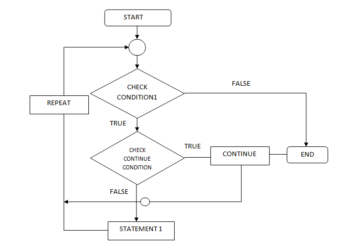
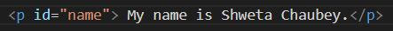
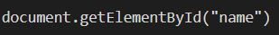
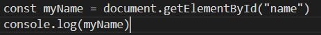
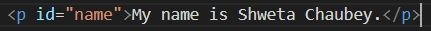

An analogy to describe JavaScript and its relationship to HTML and CSS.
Let's take an example of a house. When we erect just the structure then that part of the building can be compared to the HTML Next step in the construction would be to choose the intereiors and exteriors of the building in terms of type, colour and texture. This part is very similar to styling the webpage done with the help of CSS. Next would be the usage of the building like is it residential, commercial etc. This usage part is defined by the Javascript.
Explain control flow and loops using an example process from everyday life.
Control flow is the order in which a certain number of steps are executed to perform a task. If the steps require decision making based on certain conditions then it becomes a conditional type of control flow. And if a sequence few of the steps need to be repeated to meet those conditions then it becomes a loop. So a loop is breaking away from the linear passage of the control flow to repeat a few steps.
A very good everyday example would be of baking a cake.The linear control flow is to get the ingredients in desired quantity and then mix them well. Once it is mixed without lumps then the batter is poured into the baking dish and put it in the oven. But when we start following the process a situation comes when we have to decide when the batter is ready. So after mixing for a couple of minutes we check for lumps in the batter. If there are no lumps then we pour them in the baking container and put it in the oven for baking. But, if there are lumps then we repeat the mixing process for a couple of more minutes and then check again for lumps. So we repeat this process again and again till there are no lumps. This forms the looping part.
Describe what the DOM is and an example of how you might interact with it.
DOM is an abbreviation for Document Object Model. A web page is a document that is displayed as the
HTML source document or in the browser window. So when we load a web page the browser creates a
Document Object Model of the page. DOM repersents the document as nodes and objcts and programming
languages interact with the page through these. Through this programming interface, programs can
change the document structure, content and style. These modifications are done with help of a
scripting language such as Javascript. An example of a DOM tree structure can be:
DOM and JavaScript interaction: An example of one of the methods used for selecting an element in HTML document: getElementById()
In HTML, we use id as an unique identifier for the element. So,
In JavaScript we access the HTML tag by referencing the id name hence,
When we run this code:
The output displayed on the console would be:
Explain the difference between accessing data from arrays and objects.
Arrays and objects both are used to store a collection of data but how they both store the data defines as to how that data can be accessed.
In arrays the data is stored in a sequence/order with each item having an index(kind of location identity). This index is used to access the data stored at that particular position.
eg. Array[0] would point to the data stored at the first position beacuse indexing starts from 0.
In objects the data is stored and access using key/value pairs. Value signifies the stored data and key is how that data is accessed. For retrieving the data from the object the key is added after object name with a dot(objectname.key). If the key is of more than one word or a string then there is another way of accessing it (objectname["key"]).
Explain what functions are and why they are helpful.
A function is set of instructions/code grouped in a unit to perform certain task. It runs only when it is called. When we are doing a big project then there would be multiple tasks and some of which might be repetitive. So such blocks of code are grouped together into a function and can be used to execute the same task repeatedly by calling them whenever required in a single code line. This reduces the number of lines of code. They also facilitate the reusing of code.